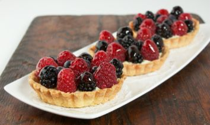

Sweet Shortcrust Pastry :
- 313 g (2½ cups) plain (all-purpose) flour
- 42 g (3 tablespoons) sugar
- 227 g (1 cup or 2 sticks) unsalted butter, cold, cut into 6-mm (¼-inch) cubes
- 2 large egg yolks, cold
- 90 ml (¼ cup + 2 tablespoons) ice water, divided (reserve 2 tablespoons)
- 1 large whole egg, extra, lightly beaten, for egg wash
- Place flour and sugar in bowl of food processor; pulse a couple of times to combine.
- Add cold butter; process until mixture resembles a coarse crumb, 10 to 20 seconds.
- In a small-sized bowl, lightly beat egg yolks; add 60 ml (¼-cup) ice water (reserve 2 tablespoons) and stir to combine.
- With processor running, add egg mixture, in a slow steady stream, through feed tube. Process until dough comes together (do not process more than 30 seconds). Test by squeezing a small amount of dough together with your fingers. If dough is crumbly, add extra ice water, 1-tablespoon at-a-time.
- Divide dough into two equal balls; flatten each ball into a disc and wrap in plastic. Transfer discs to the refrigerator and chill for at least 1 hour.
- Roll out pastry on a lightly floured work surface to 3-mm (1/8-inch) thickness. Cut pastry into eight 15¼-cm (6-inch) rounds. Fit the pastry rounds into the tart tins; trim off excess pastry with a sharp paring knife. Prick base of pastry shells with a fork. Transfer pastry lined tins to a baking sheet; freeze pastry shells until firm, about 30 minutes.
- Preheat oven to 190° C (375° F).
- Remove pastry shells from freezer. Line each pastry shell with non-stick baking paper, leaving a 5-cm (2-inch) overhang; fill with ceramic pie weights, dried beans or rice. Return tins to baking sheet and bake pastry shells until edges are just beginning to turn golden, about 15 minutes.
- Transfer baking sheet to wire rack. Remove non-stick baking paper and pie weights. Let cool for 1 minute. Prepare egg wash; brush base of each pastry shell with egg wash. Return to oven and continue to bake until golden all over, about 5 to 10 minutes.
- Transfer tins to a wire rack and allow tarts to cool in tins, 2 to 3 minutes. Remove pastry shells from tins and return to wire rack to c
ool completely.
Pastry Cream:
- 237 ml (1 cup) whole milk
- ½ vanilla bean, split and seeds scraped
- 70 g (5 tablespoons) caster (super fine granules) sugar, divided
- 3 large egg yolks, room temperature
- 9 g (1 tablespoon) cornstarch
- 8 g (1 tablespoon) flour
- 125 ml (½ cup + ½ tablespoon) heavy cream, 35%
- 4 g (½ tablespoon) confectioners’ sugar,
sifted- In small saucepan bring milk, vanilla bean, seeds, and sugar (reserving 1 tablespoon) just to the boil over medium heat, stirring to dissolve sugar.
- Meanwhile, in a medium-sized bowl whisk together egg yolks and reserved sugar until pale.
- Using a fine mesh sieve, sift cornstarch and flour into egg mixture; whisk until smooth.
- Remove vanilla bean from milk mixture. Gradually pour hot milk mixture into egg mixture, whisking constantly until well combined.
- Pour mixture through a fine mesh sieve back into saucepan. Bring to a boil, whisking constantly, over medium heat. Continue to boil, whisking constantly, over medium heat until thickened, about 2 minutes. Remove from heat and transfer mixture to small bowl. Place a piece of plastic wrap directly onto surface of pastry cream to prevent a skin from forming as it cools.
- In small bowl, using a hand-held electric mixer beat heavy cream and confectioners’ sugar until soft peaks form.
- Gently fold one-third whipped cream into pastry cream (this will help loosen the pastry cream). Fold in one-half remaining whipped cream and then fold in remaining whipped
cream.
Assembling Fruit Tarts- :
- 60 ml (¼ cup) cherry jelly, seedless raspberry jam, apricot jam or red current jelly
- Mixed berries, raspberries, blueberries and blackberries
- To prepare glaze, in small saucepan heat jelly (or jam) over medium-low heat, stirring constantly, until jam is melted, set aside to cool slightly.
- Divide pastry cream evenly between pastry shells. Using a small offset spatula spread cream evenly to edges of pastry shell.
- Arrange berries on top; using a small pastry brush thinly coat berries with glaze.
- If not serving tarts immediately refrigerate to chill. Bring to room temperature before serving. Tarts are best enjoyed on the day they are asse
mbled.
Fruit Tarts:
Makes 8 11½-cm (4½-inch) tarts
**Special Equipment – 8 X 11½-cm (4½-inch) tart tins with removable bottoms
- Sweet Shortcrust Pastry
- Pastry Cream

YUMMY YUMMY FRUIT TART